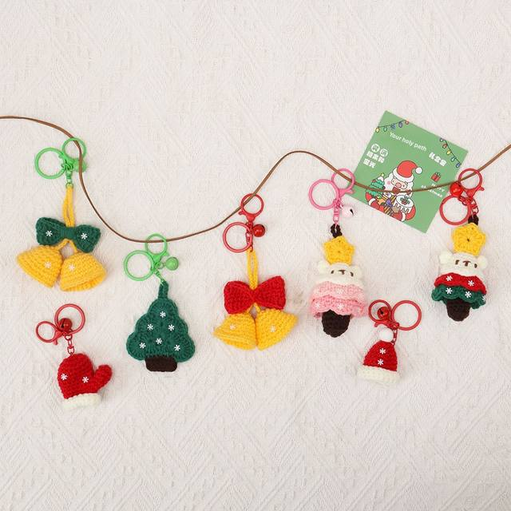

Wholesale Crochet Christmas Ornaments
Plan custom ornaments, stockings and festive amigurumi with coordinated colors, private labels and retail packaging.
Create a Cohesive Holiday Collection
Tree Ornaments
Develop Santas, snowmen, gingerbread, wreaths and original seasonal characters around a coordinated retail theme.
Giftable Sets
Combine related ornaments in retail presentation formats that suit the approved collection and sales channel.
Seasonal Scheduling
Confirm samples and bulk requirements early enough to review production, inspection, packaging and international freight.
Built for Seasonal Buyers and Gift Programs
This commercial page is for retailers, distributors, corporate gift buyers and private-label brands sourcing a defined holiday range. Buyers can start from an existing seasonal direction or submit original references for review. The most useful inquiry identifies the target shopper, assortment size, required quantity by style, destination market and warehouse date.
Customization can cover approved colors, characters, hanging details, labels, cards and presentation. Final options depend on the design and order requirements. Buyers are responsible for confirming rights to branded or licensed artwork before development begins.
Sample Approval and Production Reference
Send clear references, target dimensions, color direction and packaging needs with the inquiry. During sample review, check the ornament from the front and back, confirm how it hangs, and review attached details, labels and presentation. Consolidated feedback helps establish one approved sample and written specification for production reference.
Before production, confirm quantities by style, final artwork, color references and how sets should be assembled. The stated MOQ on this page is 200 pieces per style; other commercial details are confirmed from the selected designs and complete brief.
Quality, Packaging and Delivery Planning
Relevant checks include overall dimensions, color placement, secure hanging loops, attached components, loose yarn ends, correct labels and complete gift sets. Packaging should be reviewed as an assembled unit so the product remains presentable during handling. Carton marks, delivery instructions and shipping options are confirmed according to quantity, packed volume and destination.
Plan Backward from Your Retail Launch
Allow time for design confirmation, sampling, production, inspection, packaging and freight. Early planning gives more flexibility for custom sets and packaging. Use the separate Christmas crochet ordering timeline as an informational checklist, then request a project-specific schedule for the actual range.
Buyer Questions
What should be included in an inquiry?
Send references, quantity by style, target dimensions, packaging direction, destination market and required warehouse date.
Can several ornaments form one set?
Yes, a coordinated set can be reviewed when its components, presentation and quantities are clearly defined in the brief.
When is timing confirmed?
Sampling, production and shipping timing are confirmed according to the approved design, quantity, packaging and destination.